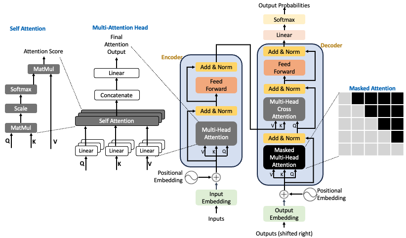
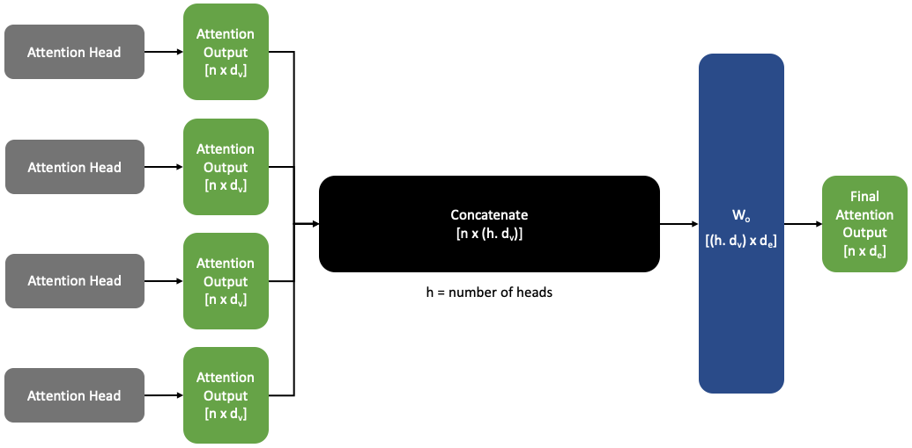

Transformers — A Deep Dive
1 Introduction
Transformers are a neural network architecture designed for processing sequential data. Introduced in the 2017 paper Attention is All You Need, transformers replaced recurrent and convolutional architectures in many NLP tasks. They leverage a novel mechanism called self-attention, which enables better parallelization and more effective handling of long-range dependencies.

2 Limitations of Recurrent Neural Networks (RNNs)
Before the advent of transformers, Recurrent Neural Networks (RNNs) were the dominant architecture for sequence modeling tasks. Their ability to process sequences of variable length and maintain a memory of past inputs made them widely adopted. In an RNN, the hidden state \(h_t\) at time \(t\) is computed based on the current input \(x_t\) and the previous hidden state \(h_{t-1}\).
This allows RNNs to process sequences by carrying information forward over time.
The hidden state at time t can be computed recursively as:
\[ h_t = \tanh(W_h h_{t-1} + W_x x_t + b) \]
where:
- \(W_h\) — weight matrix for the hidden state
- \(W_x\) — weight matrix for the input
- \(b\) — bias term
- \(\tanh\) — activation function
The figure below shows a single RNN cell (left) and the unrolled RNN over multiple time steps (right).

However, RNNs suffer from:
- Sequential computation: Cannot fully parallelize processing of sequences.
- Vanishing/exploding gradients: Gradients through many time steps can vanish or blow up, making it difficult to learn long-term dependencies.
3 Architecture Overview
At a high level:
- Encoder–Decoder (original transformer) — used in translation.
- Encoder-only (e.g., BERT) — for classification, masked language modeling.
- Decoder-only (e.g., GPT) — for autoregressive text generation.
At the heart of these architectures is the self-attention mechanism, which enables each token to attend to all others in the sequence — a key innovation that we’ll explain shortly.
We’ll break down the encoder and decoder below.
3.1 Key Variables
The following table summarizes the notations, shapes, and meanings of the variables that will appear throughout the Encoder and Attention sections.
4 Encoder
The encoder consists of a stack of identical layers, each containing:
- Self-Attention
- Feedforward Network
- Residual Connections + Layer Norm
- Positional Encoding
4.1 Input Representation
Before the attention mechanism can work, each input token is mapped to a continuous vector representation and enriched with positional information.
Token Embedding
We start with a sequence of token indices:
\[
T \in \{1, \dots, V\}^n
\] where \(n\) is the sequence length and \(V\) is the vocabulary size.
These indices are mapped to continuous vectors using a learnable embedding matrix \(E \in \mathbb{R}^{V \times d_e}\):
\[
X_\text{tokens} = E[T] \in \mathbb{R}^{n \times d_e}
\]
Positional Encoding
The self-attention mechanism processes the input sequence as a set of vectors without any notion of order.
However, the meaning of a sentence depends on the order of its words.
“The cat chased the dog” ≠ “The dog chased the cat”
Without positional information, self-attention would treat these sentences as identical.
To address this, we add a position vector \(p_i\) to each token embedding \(x_i\), producing a position-aware representation:
\[ \tilde{x}_i = x_i + p_i \]
where:
- \(x_i\) — embedding of the token at position \(i\)
- \(p_i\) — positional encoding vector
- \(\tilde{x}_i\) — position-aware embedding passed to the model
The figure below illustrates this process:
Following are two approaches to Positional Encoding:
(A) Sinusoidal Positional Encoding
In the original Transformer paper, \(p_i\) is defined using sinusoidal functions of varying frequencies:
\[ p_i = \begin{pmatrix} \sin\big(i / 10000^{\frac{2j}{d_e}}\big) \\ \cos\big(i / 10000^{\frac{2j}{d_e}}\big) \end{pmatrix} \]
Why do trigonometric functions work?
Sine and cosine provide unique, smooth, and continuous encodings for each position.
Using different frequencies helps the model notice both small and large position differences.
No learnable parameters — generalizes better to unseen sequence lengths.
Pros:
- Does not introduce additional parameters.
- Periodicity allows some generalization to longer sequences.
Cons:
- Not learnable — fixed at initialization.
- Limited extrapolation in practice.
(B) Learned Positional Encoding
An alternative is to treat \(p_i\) as a learnable parameter:
We define a matrix \(P \in \mathbb{R}^{d_e \times n}\), where each \(p_i\) is a column of \(P\).
\[ P = [p_1, p_2, \dots, p_n], \quad P \in \mathbb{R}^{d_e \times n} \]
- Pros:
- Fully learnable; each position can adapt to the data.
- Most modern systems (e.g., GPT) use this.
- Cons:
- Cannot extrapolate to sequences longer than seen in training.
In practice, most architectures today use learned positional encodings because of their flexibility and performance.
Summary
- Positional encoding ensures the model is aware of token order.
- Sinusoidal encodings are fixed & periodic.
- Learned encodings are flexible & widely used today.
4.2 Attention Mechanism
At the heart of the transformer is the scaled dot-product attention mechanism, which allows the model to weigh the relevance of each token in the sequence when processing a given token. This enables the model to capture relationships between tokens regardless of their distance in the sequence.
What is Attention?
Each token is projected into three vectors:
- Query (\(Q\)): represents the token we’re focusing on.
- Key (\(K\)): represents the tokens we compare against.
- Value (\(V\)): represents the information we retrieve if the key is relevant.
For a given query \(Q\), the attention weights over all keys \(K\) are computed by taking the dot product of \(Q\) with \(K\), scaling, and passing through a softmax:
\[ \text{Attention}(Q, K, V) = \text{softmax} \left( \frac{Q K^T}{\sqrt{d_k}} \right) V \]
where:
- \(Q\) is the matrix of query vectors, shape \([n \times d_k]\)
- \(K\) is the matrix of key vectors, shape \([n \times d_k]\)
- \(V\) is the matrix of value vectors, shape \([n \times d_v]\)
- \(d_k\) is the dimension of the keys (used for scaling)
Step-by-step Computation
The figure below illustrates the computation flow of scaled dot-product attention, including the dimensions of each variable at every stage:
Breakdown of the Steps
1: Input Representation: The input tokens are embedded into a continuous vector space and positional encodings are added to inject sequence order information:
\[ X = \text{Embedding}(X_{\text{tokens}}) + \text{PositionalEncoding} \]
2: Linear Projections: The embedded input \(X\) is projected into three different spaces to produce the query (Q), key (K), and value (V) matrices, using learnable weight matrices \(W_q\), \(W_k\), \(W_v\):
\[ Q = X W_q, \quad K = X W_k, \quad V = X W_v \]
These projections allow the model to attend to different aspects of the input.
3: Compute Similarity Scores: We compute the dot product between the queries and the transposed keys to measure similarity (or relevance) between tokens:
\[ Q K^T \]
This gives a matrix of raw attention scores.
4: Scale the Scores: To avoid extremely large values when the dimensionality \(d_k\) is high, the similarity scores are scaled by \(\sqrt{d_k}\):
\[ \frac{Q K^T}{\sqrt{d_k}} \]
This stabilizes gradients during training.
5: Softmax to get Attention Weights: The scaled scores are passed through a softmax function to convert them into probabilities that sum to 1. These are the attention weights \(A\), indicating how much focus to put on each token:
\[ \text{softmax} \left( \frac{Q K^T}{\sqrt{d_k}} \right) \]
6: Weighted Sum: Finally, the attention weights are multiplied with the value vectors \(V\) to produce a weighted sum, which is the attention output:
\[ \text{Attention Weights} \cdot V \]
Why is Attention Powerful?
- Captures long-range dependencies.
- Learns which tokens are most relevant to each other.
- Fully parallelizable since it operates on the entire sequence at once.
4.2.1 Multi-Head Attention
While a single attention head can focus on certain aspects of the input sequence, it may miss other patterns. The multi-head attention (MHA) mechanism allows the model to attend to information from multiple representation subspaces at different positions simultaneously. This helps the transformer to capture more nuanced patterns in the input sequence.
The figure below shows how multiple independent attention heads are computed in parallel, concatenated, and linearly transformed to produce the final output of the multi-head attention layer.

What is Multi-Head Attention?
Instead of computing a single set of \(Q\), \(K\), \(V\), the model projects the input into \(h\) different sets of \(Q\), \(K\), \(V\), called heads. Each head performs scaled dot-product attention independently, and their outputs are concatenated and linearly transformed.
For head \(i\): \[ \text{head}_i = \text{Attention}(Q_i, K_i, V_i) = \text{softmax} \left( \frac{Q_i K_i^T}{\sqrt{d_k}} \right) V_i \]
where:
- \(Q_i = X W_q^{(i)}\)
- \(K_i = X W_k^{(i)}\)
- \(V_i = X W_v^{(i)}\)
Here, \(W_q^{(i)}, W_k^{(i)}, W_v^{(i)}\) are separate learnable weights for each head.
Combining the Heads
The outputs of all \(h\) heads are concatenated along the feature dimension and projected back into \(d_e\) dimensions: \[ \text{MultiHead}(Q, K, V) = \text{Concat}(\text{head}_1, \dots, \text{head}_h) W_o \]
where \(W_o\) is a learnable weight matrix of shape \([h \cdot d_v \times d_e]\).
The figure below shows an example of how multi-head self-attention captures relationships between tokens. Here, the word “making” attends strongly to itself as well as to the words “more” and “difficult”. Different colors correspond to different attention heads, each learning distinct relationships in the input sequence. Thicker lines represent stronger attention weights, showing which tokens are most relevant for the given token.
Why Multi-Head Attention?
- Allows the model to jointly attend to information from different representation subspaces.
- Provides richer and more diverse attention patterns.
- Empirically improves performance compared to a single head.
4.3 Feedforward Network
After the self-attention layer, the transformer applies a position-wise feedforward network (FFN) to each token embedding independently. This introduces nonlinearities into the model and allows it to transform the attended information further.
Why is this needed?
- Self-attention by itself is a linear operation — it just computes weighted sums of the value vectors.
- Stacking more self-attention layers without nonlinearity simply re-averages the values, limiting expressiveness.
- To address this, each output vector of the self-attention layer is passed through a multi-layer perceptron (MLP).
Computation For each token output vector \(output_i\) from the self-attention: \[ m_i = MLP(output_i) = W_2 \cdot ReLU(W_1 \cdot output_i + b_1) + b_2 \]
where:
- \(W_1\), \(W_2\) — learnable weight matrices.
- \(b_1\), \(b_2\) — learnable biases.
- \(ReLU\) — non-linear activation function applied element-wise.
This is done independently for each position.
Summary:
- Adds nonlinearity and expressiveness.
- Processes each token independently after attention.
- Helps the model learn complex transformations beyond weighted averages.
4.4 Residual Connections & Layer Normalization
The transformer uses two additional techniques — residual connections and layer normalization — to stabilize training and improve convergence. These are often written together as Add & Norm in most diagrams.
Why use these techniques?
- Residual connections make the optimization landscape smoother and help gradients flow better.
- Layer normalization stabilizes training and helps each layer produce consistent, normalized outputs.
4.4.1 Residual Connections
Residual connections help the model learn better by allowing gradients to flow more easily through the network and biasing it towards the identity function.
Instead of simply applying a layer transformation:
\[ X^{(i)} = \text{Layer}(X^{(i-1)}) \]
we add the input back to the output of the layer:
\[ X^{(i)} = X^{(i-1)} + \text{Layer}(X^{(i-1)}) \]
This ensures that the model only needs to learn the residual (the difference from the input), which improves optimization.
4.4.2 Layer Normalization
Layer normalization helps by reducing uninformative variation in the hidden states of each layer. It normalizes each token embedding to have zero mean and unit variance within each layer, and within the feature dimension of a single token — independent of other tokens or samples in the batch.
For a vector \(x \in \mathbb{R}^d\), layer norm is computed as:
\[ \mu = \frac{1}{d} \sum_{j=1}^{d} x_j, \quad \sigma = \sqrt{\frac{1}{d} \sum_{j=1}^{d} (x_j - \mu)^2} \]
Then:
\[ \text{output} = \frac{x - \mu}{\sqrt{\sigma^2 + \epsilon}} \cdot \gamma + \beta \]
where:
- \(\gamma \in \mathbb{R}^d\), \(\beta \in \mathbb{R}^d\) are learnable gain and bias parameters.
- \(\epsilon\) is a small constant for numerical stability.
In conventional neural networks, such as convolutional neural networks (CNNs), it is common to use Batch Normalization to stabilize training. However, in sequence models like Transformers, Layer Normalization is preferred because it normalizes each token independently of the batch and sequence length — making it more suitable for NLP tasks and small batches.
The figure and the table below shows the difference between Layer Normalization and Batch Normalization, highlighting which dimensions they operate over.
| Aspect | Layer Normalization | Batch Normalization |
|---|---|---|
| What it normalizes over | Feature dimension (per token) | Feature dimension (across the batch) |
| Suitable for | Sequence models, NLP, Transformers (small batch sizes) | CNNs, vision tasks (large batch sizes) |
| Handles variable batch sizes? | Yes | No (depends on batch size) |
| Why in Transformers? | Stable for per-token operations & small batches | Unstable in small batches & sequences |
In summary, Layer Normalization normalizes each token’s features independently of other tokens and samples, making it ideal for sequence-to-sequence and language tasks. Batch Normalization normalizes each feature across the batch, which is less suitable for NLP. Layer normalization’s independence from batch size and sequence structure makes it ideal for NLP and sequence models.
5 Decoder
The decoder is used for sequence generation.
It also consists of stacked layers with three components:
- Masked Multi-Head Self-Attention — only attends to past tokens.
- Encoder–Decoder Attention — attends to the encoder output.
- Feedforward + normalization + residuals
5.1 Attention Mask for Decoder
When using self-attention in decoders, it is critical to prevent the model from “looking into the future,” i.e., accessing tokens that come later in the sequence. This ensures proper causal sequence generation (left-to-right).
Why do we need masking?
- In sequence prediction tasks (like machine translation or language modeling), the model should predict the next token based only on past and current tokens — not on future tokens.
- Without masking, the self-attention mechanism would compute attention over all tokens in the sequence, violating the causal order.
- We solve this by masking out the attention to future tokens.
How does masking work?
At each position \(i\), we: - Keep attention scores for tokens at \(j \leq i\) (past & current positions). - Set attention scores to \(-\infty\) (or equivalently, weights to 0 after softmax) for \(j > i\) (future positions).
Mathematically, the masked attention score \(e_{ij}\) is:
\[ e_{ij} = \begin{cases} q_i^\top k_j, & j \leq i \\\\ -\infty, & j > i \end{cases} \]
After applying softmax, this ensures the model attends only to the allowed tokens up to position \(i\).
The figure below illustrates how the attention mask is applied to \(QK^\top\), blocking future tokens by assigning them \(-\infty\), and producing the masked attention matrix.
Benefits:
- Enables parallel computation — the mask is precomputed and applied during training.
- Prevents information leakage from future tokens.
- Allows the decoder to autoregressively predict tokens during inference.
5.2 Cross-Attention in the Decoder
After the decoder’s self-attention step, the transformer uses a cross-attention layer (sometimes called encoder-decoder attention) to incorporate information from the encoder’s output into each decoder token representation.
In this layer:
- The queries (\(x_1\)) come from the decoder hidden states at the current layer.
- The keys (\(x_2\)) and values (\(x_2\)) come from the encoder output.
This allows the decoder to attend to the entire input sequence (from the encoder) for each token it generates.
The figure below shows the computation flow of the cross-attention mechanism, including the dimensions of each variable at every stage:
5.2.1 Step-by-step
The decoder hidden states \(x_1 \in \mathbb{R}^{n \times d_e}\) (where \(n\) is the number of decoder tokens) are projected into queries: \[ Q = x_1 W_q \in \mathbb{R}^{n \times d_q} \]
The encoder output \(x_2 \in \mathbb{R}^{m \times d_e}\) (where \(m\) is the number of encoder tokens) is projected into keys and values: \[ K = x_2 W_k \in \mathbb{R}^{m \times d_q}, \quad V = x_2 W_v \in \mathbb{R}^{m \times d_v} \]
Compute similarity scores between each query and all keys: \[ Q K^T \in \mathbb{R}^{n \times m} \]
Scale the scores by \(\sqrt{d_k}\) and apply softmax to get the attention weights: \[ A = \text{softmax}\left(\frac{Q K^T}{\sqrt{d_k}}\right) \in \mathbb{R}^{n \times m} \]
Compute the weighted sum over the values to get the updated decoder representations: \[ Z = A V \in \mathbb{R}^{n \times d_v} \]
This mechanism enables each decoder token to attend over the entire encoder output sequence, selecting the most relevant source tokens for prediction at each step.
6 Training Tips
- Large batches & data: Helps stabilize gradients and improve generalization by providing more diverse examples.
- Learning rate warm-up: Gradually increases the learning rate at the start of training to avoid unstable updates.
- Label smoothing: Prevents the model from becoming overconfident by softening the target labels.
- Gradient clipping: Limits the magnitude of gradients to avoid exploding gradients and stabilize training.
7 Variants and Evolutions
| Model | Type | Use Case |
|---|---|---|
| BERT | Encoder-only | Classification, QA |
| GPT | Decoder-only | Text generation |
| T5 | Encoder–Decoder | Translation, summarization |
| ViT | Encoder-only | Image classification |
8 Applications
- NLP: translation, summarization, question answering.
- Vision: Vision Transformers (ViTs).
- Multimodal: CLIP (image-text), Flamingo.
- Other: Protein folding (AlphaFold).
9 Strengths and Limitations
Pros:
- Captures long dependencies.
- Parallelizable.
- State-of-the-art results.
Cons:
- Requires huge compute resources.
- Data-hungry.
- Less interpretable.
Transformers have revolutionized sequence modeling by replacing recurrence with parallelizable self-attention. Their ability to capture long-range dependencies and scale to large data has made them the foundation of modern NLP and beyond.
10 References & Further Reading
- Attention is All You Need — arXiv:1706.03762
- BERT — arXiv:1810.04805
- GPT-3 — arXiv:2005.14165
- Vision Transformer — arXiv:2010.11929